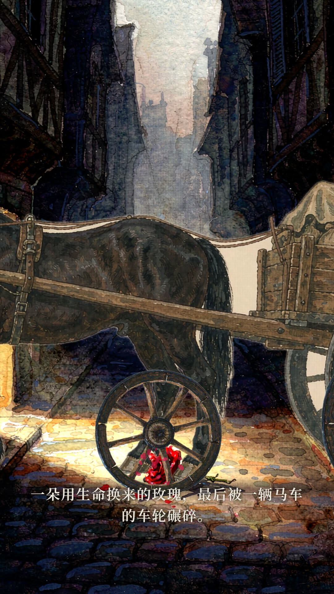
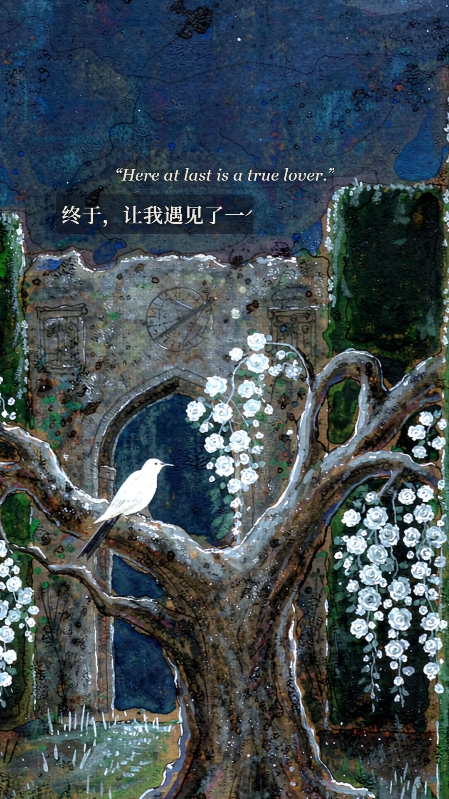
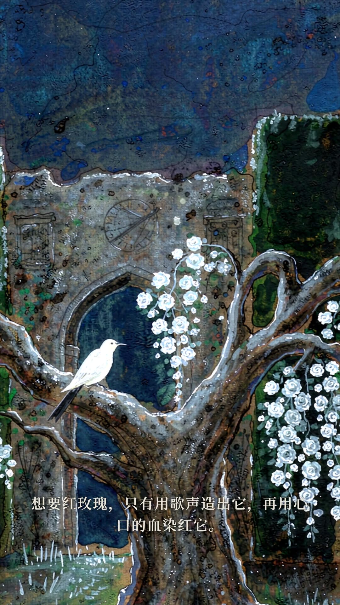
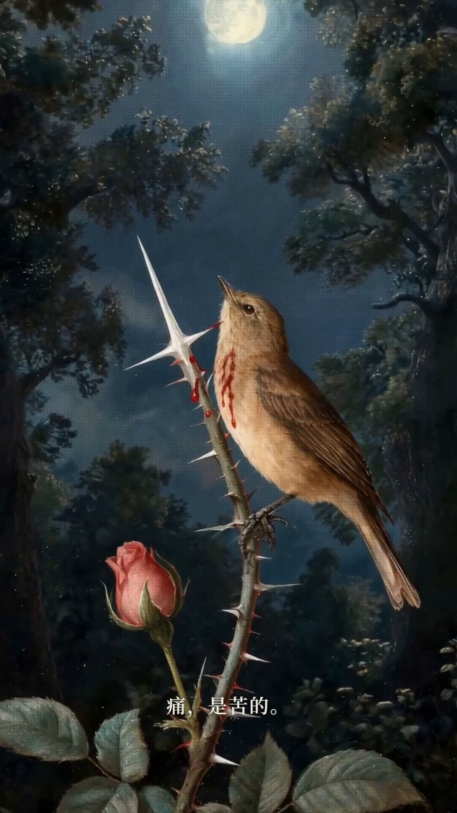
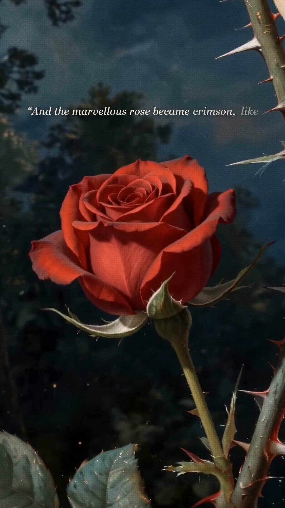
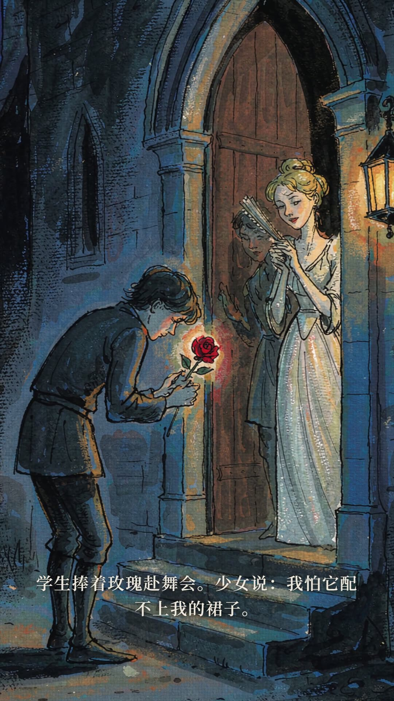
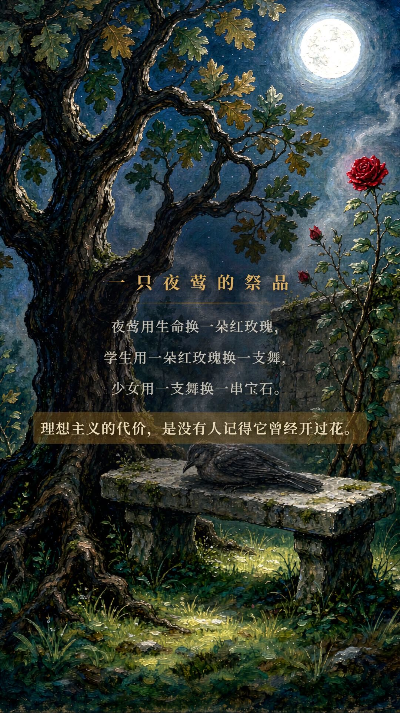

成片《夜莺与玫瑰》
夜晚的花园里，一只夜莺相信人间有值得用生命去换的爱情。
若播放卡顿，可 下载全片（约 73 MB）后本地观看。
🎥 镜头
全片 17 个场景单一时间轴连续运镜，纯关键帧 easeInOut 缓动，根治画面抖动。
🌹 画面
AI 绘制水彩 / 油画质感插画 30 余张；「血染玫瑰」与「马车碾压」由 Seedance 生成的实拍感片段整段替换。
✒️ 字幕
关键剧情点引用王尔德原文：矩形遮罩扫掠 + 逐字 X 轴位移 + 马克笔标记，强调而不喧宾夺主。
选题 · 为什么是《夜莺与玫瑰》
《夜莺与玫瑰》是王尔德 1888 年童话集《快乐王子与其他故事》中最凄美的一篇：学生要一朵红玫瑰才能与心上人共舞，夜莺以生命换取玫瑰的绽放，玫瑰却被拒之门外、碾于车轮。
它篇幅极短、意象极浓、结构极完整——非常适合 90 秒竖屏讲解；同时「生命 / 爱情 / 价格」的冲突自带情绪曲线，天然适合做「先给结论、再讲代价、最后反转」的钩子式叙事。
"爱比生命更好，一只鸟的心又算得了什么？" —— 本片想让大家在 90 秒内记住这句话的重量。
策划 · 七幕结构与情绪线
钩子先行：把结局碾碎的一幕剪进开头；随后按「听见 → 代价 → 献祭 → 绽放 → 幻灭」推进，终章以主旨卡收束。







文案 · 23 句旁白与 8 处原文引用
金色英文为王尔德原文引用，在片中以「矩形遮罩 + 马克笔标记」特效呈现；每句旁白均为独立音频，总时长决定全片节奏。
素材 · 从画布到音轨
🖼 插画 30+
AI 生成水彩 / 油画质感场景与人物：花园、抵刺、染红、书桌、马车……统一暗金夜色调。
🎞 素材片段 ×2
「血染玫瑰」「马车碾压」由 Seedance 文生视频生成，逐帧插值 + 变速曲线融入成片。
🎙 旁白 23 句
edge-tts 云希音色（+28% 语速），逐句合成独立音频，时长即时间轴。
🎼 音乐 / 字体
ambient 环境垫乐（音量 16%）铺底；思源宋体（Noto Serif SC）贯穿全片与网页。
旁白音频试听
方法 · 程序化视频生成流水线
不是剪辑软件里拖时间线，而是用 React 写视频：每一帧都是代码算出来的。
关键设计决策
- 镜头防抖：放弃叠加振荡，改纯关键帧 easeInOut 缓动，17 场景共享一条连续时间轴。
- 变速曲线：血染片段 0.72× → 0.28× 余弦平滑变速，保住镜头推进与玫瑰盛开的完整呈现。
- 等长替换：片尾署名删除后，主旨分析严格占满原时长，旁白句以字数反推等长台词。
- 特效克制：引用特效只挂画面上部，与底部字幕互斥，避免同屏两套中文。
工具链 · 插件 · Skill
从成片到网页：一条完整的「AI 素材 → 代码合成 → 截图审计 → 发布」生产链。
Remotion 4
React 视频引擎，代码即成片，逐帧可复现，2783 帧一次渲染成型。
Seedance
文生视频，生成「血染玫瑰」「马车碾压」两个实拍感素材片段。
edge-tts
微软神经语音（云希音色），逐句合成 AI 旁白 23 句。
AI 文生图
水彩 / 油画质感场景与人物插画 30 余张，统一暗金夜色调。
FFmpeg
抽帧取图 / 两遍编码压缩 / faststart 流式封装 / 音轨装配。
PIL · NumPy
绕开滤镜缺陷，逐帧线性插值实现平滑慢放与素材变速。
Noto Serif SC
思源宋体，全片与网页贯穿同一套衬线排版语言。
VS Code · TS
TypeScript 严格类型检查，驱动 Remotion 组件迭代。
Git · GitHub Pages
版本管理 + Pages 静态发布，令牌认证免密推送。
Cloudflare
备用 CDN 与访问加速通道（按作业要求注册配置）。
Watt Toolkit
Steam++ 网络加速，GitHub 上传与访问的备用通道。
Playwright
无头浏览器截图审计：每轮改版先过静帧闸门再上线。
Agent 插件与 Skill 清单
- remotion-longform-video-ops：长视频工程方法论——「短样片先行 → 帧级审查 → 定稿再全片渲染」的迭代流程与 92.8s 长片的无肉眼画面验证。
- remotion-video-toolkit：Remotion 动画、时序、渲染（CLI / 超时守护 / 分段渲染）的完整工具链参考。
- motion-web（按需求安装）：创意网页动效方法论与 design-slop 设计闸门——驱动本页四套差异化入场编排、hover 去同款、reduced-motion 无障碍降级。
- Playwright 截图审计链：Chromium 自动截图，逐屏验证「减少动态」模式无内容卡隐形（红线检查）与动效关键帧状态。
- AI 生成插件：文生图（30+ 插画）、Seedance 文生视频（2 段素材片段）、edge-tts 语音合成（23 句旁白）。
视频中运用的美工技能
- 视觉风格板：暗夜金主题（夜空底 × 暗金 × 象牙白三色体系），水彩 / 油画质感插画统一色调与光感。
- 构图与运镜：17 场景共享单一时间轴的连续长镜，锚点定位（鸟胸 / 玫瑰 / 轮心）经像素检测校准。
- 字体排印：思源宋体贯穿；中文比英文大一号、英文斜体、章节标签 + 时间码的三级信息层级。
- PV 字幕特效：矩形遮罩扫掠 + 逐字 X 轴位移 + 马克笔标记三层合成，40%~50% 不透明度克制强调。
- 色彩与对比度校正：径向暗幕压住白色玫瑰背景保主标题可读；收束句暗金标记遮罩与字幕同步。
- 变速节奏设计：0.72× → 0.28× 余弦平滑变速，保住血染绽放与车轮碾压的实拍感张力。
- 网页视觉设计：Hero 海报构图、遮罩揭幕 / 编号滑入 / 金线扫掠 / 马克笔扫掠四套入场编排、三档动效令牌体系。
总结 · 返工记录与踩坑
需求与返工全记录
- 需求① 引用原文：在关键剧情点引用王尔德原文（中英对照）→ 落地为 8 处引用特效（血染高潮 S13 有意排除，不抢戏）。
- 需求② 片尾重做：删去「王尔德 · 1888」署名，等长替换为主旨分析；新旁白以字数反推等长台词，全片 92.8 秒一帧不变。
- 需求③ PV 字幕特效：矩形遮罩 + X 轴不透明度，强调而不喧宾夺主 → 先做 3 支样片过审，再全片实施。
- 返工① 片头：字体太小、白字撞白玫瑰背景 → 字号加大加粗 + 径向暗幕压暗背景。
- 返工② 引用层级：英文改斜体、中文反超英文一号、中文加马克笔遮罩（40%~50% 不透明度、略暗于背景）。
- 返工③ 片尾节奏：主旨卡下移至画面正中、长旁白落回底部字幕位、收束句加暗金同步遮罩。
- 返工④ 网页动效：整页统一 fade-up 被设计闸门判为「模板味」→ 出 6 种入场样本对比，改为章节编号滑入 / 标题揭幕 / 副题金线 / 引用马克笔四套差异化编排。
捆绑版 ffmpeg 的 fps/setpts/minterpolate 全部报错 → 改用纯抽帧 + PIL/NumPy 逐帧插值后重组，反而获得更平滑的慢放。
0.31× 均匀慢放放大了素材本身的不均匀运镜 → 改为 0.72×→0.28× 余弦变速曲线，镜头推进与玫瑰盛开两者兼得。
视频素材慢帧超出默认 30s 帧超时 → --timeout=120000 后 2783 帧完整渲染通过。
成片 224MB 无法上传 → ffmpeg 两遍编码（6500kbps + faststart）压至约 73MB，画质几乎无损。
18 字台词最后一个字被挤到第二行 → 字距与内边距收紧，18×49px 恰好收进 900px 单行。
引用特效上线后 S02 与底部字幕同屏重复、片尾旧署名从底部漏出 → 加显隐守卫，引用句与底部字幕互斥。
Windows ffmpeg 不认 /dev/null（两遍编码 pass 1 改 -f null -）；中文目录名被 URL 编码 → 仓库根即站点根，线上路径不含中文。
全页统一 fade-up + 统一 hover 抬升，滚动两屏即被无视 → 动效令牌分三档，入场按内容角色差异化，hover 改为语义化（卡片点亮 / 图片推近）。
“一根刺、一首歌、一朵玫瑰——理想主义的代价，是没有人记得它曾经开过花。而代码记得它的每一帧。”